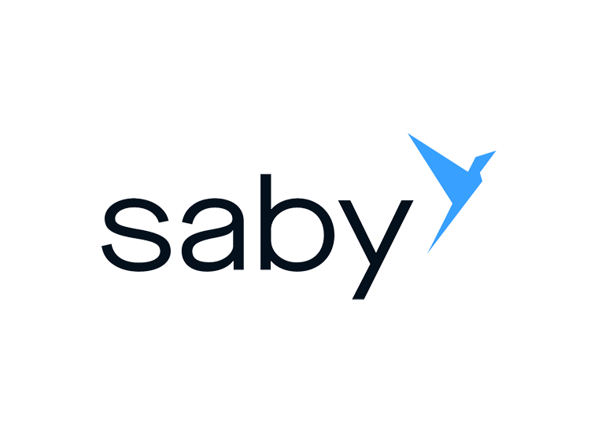

Подробное экспертное руководство для среднего и крупного бизнеса. Современное управление корпоративным транспортом требует бескомпромиссного отказа от архаичных методов финансового контроля.
Интеграция передовой цифровой топливной платформы ООО «РН-Карт» позволяет бесшовно объединить платежную инфраструктуру крупнейшей в Российской Федерации сети АЗС ПАО «НК «Роснефть» с вашими корпоративными учетными системами, обеспечивая беспрецедентный уровень автоматизации процессов, дистанционный выпуск виртуальных токенов в SaaS-кабинете и легальное возмещение 22% НДС.
Ознакомьтесь с тарифными планами в каталоге. Рассчитайте прогнозную себестоимость рейса с учетом географии работы ваших транспортных средств и выберите оптимальные условия.
Открыть каталог программПройдите регистрацию и подпишите корпоративный договор дистанционно, используя системы электронного документооборота (Диадок или СБИС). Полный отказ от бумажной волокиты.
Пополните единый лицевой счет компании. В облачном Личном кабинете моментально сгенерируйте виртуальные карты для водителей, установите лимиты или закажите доставку физического пластика.
💡 Совет эксперта (Бухгалтерский учет и Налоги):
Сразу после успешного подписания коммерческого договора настройте автоматический роуминг ЭДО в вашей ERP-системе. Это позволит бесперебойно получать сводные фискальные УПД строго в конце отчетного периода без малейших задержек, гарантируя юридически безупречную подачу налоговой декларации на возмещение 22% НДС.
Гарантированная финансовая экономия предприятия формируется за счет автоматической выгрузки сводных фискальных документов. Эта технология полностью избавляет бухгалтерию от необходимости ручного сбора, восстановления и расшифровки утерянных кассовых чеков. Автоматическая генерация УПД в конце отчетного периода гарантирует 100% принятие расходов налоговой службой.
Радикальное сокращение перепробегов тяжеловесного транспорта напрямую снижает итоговую себестоимость каждого рейса. Интеллектуальный локатор АЗС в официальном приложении позволяет диспетчеру и водителю прокладывать оптимальный маршрут с учетом точных цен на топливо и наличия нужных сервисов на станции, полностью исключая холостые заезды.
Обеспечьте абсолютную защиту корпоративного бюджета от несанкционированных сливов дизеля. Устанавливайте жесткие лимиты на вид отпускаемого топлива и суточный объем заправки в режиме реального времени. Надежным партнерам с высоким индексом доверия предоставляется гибкая кредитная линия (отсрочка платежа), предотвращающая кассовые разрывы.
Универсальных шаблонных решений для всех видов бизнеса не существует. Гибкая SaaS-архитектура программной платформы «РН-Карт» позволяет индивидуально конфигурировать настройки транзакционной безопасности и тарификации под конкретные, узкоспециализированные бизнес-процессы вашей организации.
Специализированные тендерные условия для бюджетных и муниципальных учреждений. Поддержка персонального менеджера в подготовке документации, предоставление отсрочки платежа и строгий многоуровневый контроль расходования бюджетных средств через лимитирование.
| Тип бизнеса и автопарка | Рекомендуемая конфигурация API-лимитов | Оптимальная топливная программа | Требования к ЭДО (2026 г.) |
|---|---|---|---|
| Федеральная логистика (Тягачи) | Жесткая телематическая привязка к маршруту (ГЛОНАСС), строго ДТ. | «Транзитная» (макс. скидка на трассе) | Обязательно (возмещение НДС 22%) |
| Службы такси и курьеры | Плавающий динамический лимит на сутки, АИ-92/АИ-95. | «Топливо Онлайн» (для ИП) | Опционально (УСН) / Обязательно (ОСНО) |
| Строительная спецтехника | Строгие сезонные лимиты, оплата сопутствующих сервисов (мойки). | «Для коммерческих организаций» | Обязательно (Сводный фискальный УПД) |
| Государственный сектор | Многоуровневое лимитированное бюджетирование (поквартально). | «Для бюджетных организаций» | Обязательно (Интеграция с ЕИС Закупки) |
Современная облачная инфраструктура предоставляет инженерам и аналитикам мощный интеграционный REST API шлюз. Забудьте о бесконечном ручном дублировании массивов данных: открытая архитектура экосистемы позволяет навсегда превратить автопарк в программируемый, легко масштабируемый цифровой актив.
Управляйте лимитами программно: повышайте или понижайте ограничения по конкретным картам через API в режиме реального времени на основе данных телематики.
Используйте сертифицированные модули экспорта транзакций и бесшовной интеграции с 1С: Управление автотранспортом (УАТ) и корпоративными учетными системами SAP.

Процесс безопасной корпоративной заправки интуитивно понятен линейному персоналу и целенаправленно минимизирует когнитивную нагрузку сотрудника в сложном рейсе. Базовое обучение нового водителя регламентам платформы занимает не более 5 минут.
Глубокая цифровая виртуализация — это непререкаемый стандарт современной B2B-индустрии. Как только руководитель транспортного цеха генерирует новую карту в облачном интерфейсе, она мгновенно и безопасно передается в официальное приложение на мобильном устройстве водителя.
| Характеристика | Виртуальная карта (SaaS) | Пластиковая карта |
|---|---|---|
| Скорость выпуска | Мгновенно (от 1 минуты) | От 3 до 7 рабочих дней |
| Риск утери или кражи | Нулевой (привязана к смартфону) | Высокий |
Нет, данная операция технически и юридически невозможна. Корпоративная топливная карта не является классическим банковским финансовым инструментом или обезличенным электронным кошельком для физических лиц. Она представляет собой высокотехнологичное средство строгой целевой отчетности сектора B2B, предназначенное исключительно для легальной безналичной оплаты ГСМ и сопутствующих профильных услуг строго в пределах авторизованной гео-сети АЗС.
Финальная экономическая выгода напрямую коррелирует с географией ваших постоянных рейсов и технической спецификой используемого транспорта. Для крупных логистических компаний, регулярно выполняющих транзитные междугородние грузоперевозки, разработаны узкопрофильные тарифы с максимальным дисконтом непосредственно на выделенных трассовых АЗС. Для локальных городских курьерских служб предусмотрены оптимальные внутригородские решения с акцентом на плотность покрытия сети.
Подобные сверхвысокие скидки очень часто транслируют исключительно компании-агрегаторы, физически не имеющие собственной капитальной нефтеперерабатывающей инфраструктуры. Зачастую эта скидка агрессивно компенсируется скрытыми сервисными сборами или предоставлением неполного комплекта фискальных документов для возмещения НДС. Работая напрямую с официальным эмитентом (ПАО «НК «Роснефть»), вы получаете абсолютно прозрачную биржевую цену и 100% гарантию легальности чеков для налоговой службы.
Политика корпоративного прозрачного ценообразования полностью и безоговорочно исключает любые необоснованные скрытые списания с лицевого счета. Итоговая структура стоимости обслуживания, включая наличие или полное отсутствие фиксированной абонентской платы, жестко регламентируется условиями выбранного вами тарифного плана и прямо зависит от совокупного ежемесячного объема потребления топлива вашим предприятием.